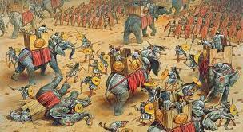
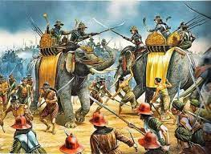
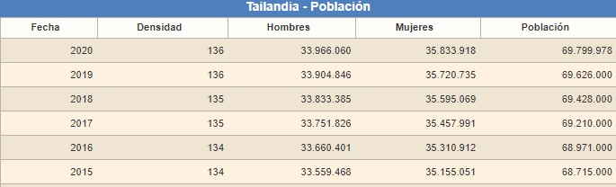
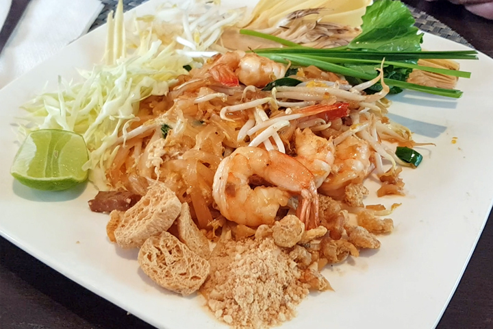
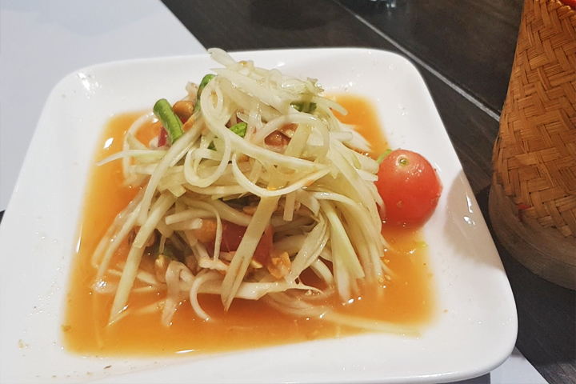
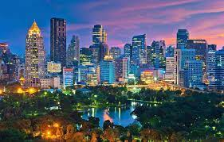
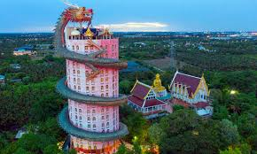
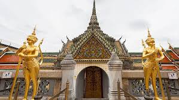
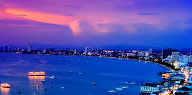

"TAILANDIA"
Historia de Tailandia
La historia de Tailandia empezó con la llegada de emigrantes a una tierra fronteriza reclamada por imperios distantes para comerciar
y como campo de trabajo e influencia.Con el tiempo, el país desarrolló poderosas entidades que unieron a los pueblos enfrentados,con el resultado de una identidad nacional. Los reyes tailandeses resistieron
ante la colonización de Occidente y solo perdieron su poder al ser desafiados por fuerzas internas.Desde la transición hacia la monarquía constitucional en 1932, los militares han gobernado casi todo el tiempo,
con breves lapsos democráticos.


Poblacion
Tailandia, con una población de 69.799.978 personas, es un país muy poblado y tiene una densidad de población de 136 habitantes por Km2. Su capital es Bangkok y su moneda Bahts.
Tailandia es la economía número 26 por volumen de PIB.

Comida
La cocina tailandesa mezcla los sabores en un mismo plato de una forma única. Un mismo plato puede ser dulce, ácido, salado y picante a la vez.
El plato más famoso del país. Se trata de fideos de arroz fritos con gama o pollo, según prefiráis, hechos con huevo, tofu, verduras y, el ingrediente secreto, una salsa con base
de tamarindo y azúcar de palma. Dicen que el Pad Thai se inventó para diferenciar la cocina tailandesa de la china. Fuera como fuese, hoy en día es el plato favorito de los turistas. Los
tailandeses también lo comen pero menos.El Som Tam es una ensalada de papaya típica de la región de Isan, la zona más grande y poblada de Tailandia y la menos visitada. Además de la papaya,
lleva chili, ajo, tomate y cacahuetes. Se aliña con una salsa de pescado (pla raa). Es un poco especial, no gusta a todo el mundo pero a quienes comemos, nos encanta. Os aconsejo darle más
de una oportunidad para cogerle el punto.Se come con caoñiao, arroz pegajoso.


Fotos



